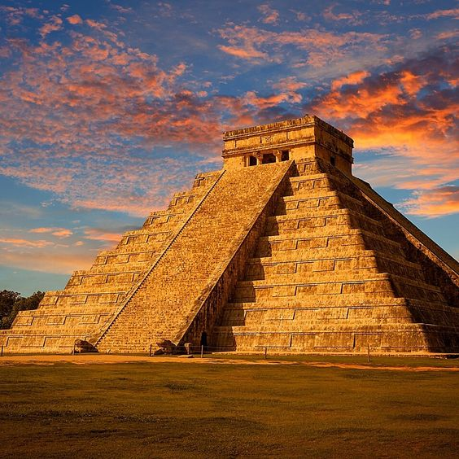

Les premières traces d'occupation et de construction, à Chichén Itzá, ont été datées du viiie ou ixe siècle4. À cette époque les Mayas occupent un territoire d’environ 325 000 km carré soit les États actuels du Yucatán, Campeche, la moitié de Chiapas et Tabasco, les territoires de Quintana Roo, la République du Guatemala, le Bélize et la partie occidentale du Honduras. Les peuples qui occupaient cette vaste zone avaient le même tronc ethnique et parlaient la même langue avec des dialectes différents. La vie économique tournait autour de la culture du maïs. Il y avait un ensemble de provinces autonomes. Ces dernières développaient quelques particularités singulières mais l’appartenance au groupe maya était marquée et il y avait une forme d’unité globale. Aussi appelée époque maya-toltèque, cette période est marquée par des changements brutaux dès le début du xe siècle. Ces changements sont dus à l’arrivée d’étrangers sur le territoire maya. Ces derniers arrivent selon la tradition historique au retour des Itzas après un long séjour à Champoton. Ainsi les chroniques mayas racontent qu’au Xe siècle des étrangers, probablement associés à des guerriers du centre du Mexique, sont arrivés. Quelques chercheurs, en particulier J. Eric S. Thompson, les identifient comme de langue maya-chontal. Ils s’appellent les Putunes et s’établissent dans le Golfe du Mexique. Ils contrôlent le commerce maritime. Une branche des Putunes-Chontales, appelés les Itzaes s’installent a Chichen Itza, leur chef est le dénommé Nacxit Xuchit, il arbore le titre de Serpent à plumes (Quetzalcoatl chez les Nahuas, Kukulcan chez les Mayas du Yucatan).
Même le visiteur le moins averti ne manquera pas de noter que deux secteurs à l'architecture fort différente coexistent à Chichen Itzá : le secteur sud, parfois appelé « Vieux Chichen », dont les édifices sont proches de ceux des cités puuc d'Uxmal, Kabah ou Labná, et un secteur nord, parfois appelé «Nouveau Chichen», aux bâtiments plus imposants, qui ressemblent à ceux du Mexique central, et plus particulièrement Tula, la capitale des Toltèques. Les appellations « Vieux Chichen » et « Nouveau Chichen » renvoient à la théorie Maya-toltèque, qui voit les deux styles se succéder dans le temps. L La pyramide a une base carrée et une vocation calendaire. En effet, la civilisation maya a développé à un degré très avancé l’astro-architecture qui consiste à allier les connaissances astronomiques au savoir-faire architectural. Ainsi, la pyramide présente quatre faces chacune divisée en neuf plateaux et portant quatre escaliers ayant chacune 91 marches, plus une marche pour la plateforme correspondant aux 365 jours du calendrier solaire. L’orientation et la construction de la pyramide sont telles qu'au moment précis des équinoxes de printemps et d'automne, le soleil produit avec les arêtes de la pyramide une ombre portée qui fait croire que les grosses têtes de serpents au pied des escaliers de la pyramide sont prolongées par le corps ondulé d'un serpent. Ce serpent n'est autre que le dieu Kukulkan ou « serpent à plumes ». Ce phénomène provoque un afflux très important de touristes à cette époque. La pente des escaliers est assez raide et si l’ascension pose généralement peu de problème, le vertige contraint fréquemment les visiteurs à s’aider d’une corde installée spécialement à cet effet pour la descente. Mais depuis 2007, il est interdit de monter sur la pyramide à cause de plusieurs décès. La grande pyramide fut érigée par-dessus une plus petite, préexistante: en 1936, les archéologues ont retrouvé cette substructure enfouie sous l'édifice que les touristes admirent actuellement. À son sommet se trouve un petit temple en bon état de conservation qui contient un trône de pierre sculpté en forme de jaguar aux yeux de jade auquel fait face un chac-mool, sur lequel on déposait des offrandes. Un tunnel très étroit dont l’entrée est située sous l’escalier permet d’y accéder. La face nord diffère des autres en ce qu'elle comporte deux petites ouvertures sur le côté. La pyramide comporte quatre grands escaliers. Lorsque l'on frappe des mains au pied de ces escaliers, depuis environ cinq à dix mètres, le bruit que renvoie l'écho ressemble à un cri d'oiseau, symbolique supplémentaire célébrant les dieux mayas. L'exploration de la pyramide intérieure a révélé en 2016-2019 une seconde pyramide imbriquée